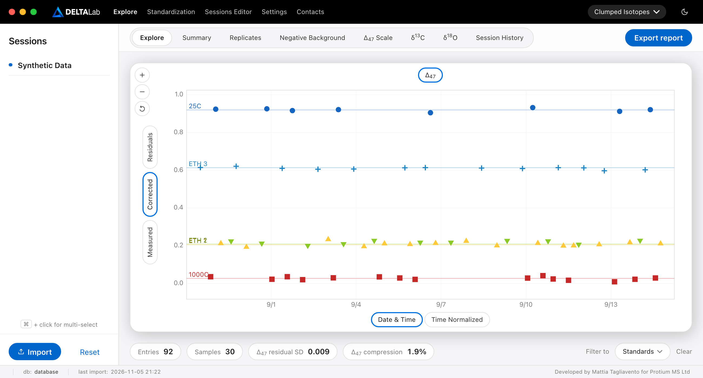

Standardization, simplified.
DELTALab, a new tool to standardize clumped (Δ₄₇) and dual clumped (Δ₄₇ & Δ₄₈) isotope data.

Main features:
Latest release
Download for macOS Apple silicon (M1 or later)Couldn't load the latest version. The links open the releases page.
- You decide when to recalculate. Make every change a session needs, then process it once. A stale-session flag, a permanent Session History and a traffic light beside each reported value show what is ready to report and what is not.
- Room for your own records. Add notes and attach files, such as instrument logs or photos, to any replicate or history entry, so the context stays with the data.
- Broad compatibility. Reads Qtegra CSV exports, Isodat .did files and retrofit Easotope databases (including mass scans, for so the negative background correction without a 47.5 cup).
- Current methods, legacy option, your own settings. Standardise with the community’s current state-of-the-art approaches, or with Easotope’s transfer function to compare with earlier work. On top of these, add your own in-house standards, temperature calibrations, dual clumped equilibrium lines and δ18O acid fractionation equations.
- Full control over sessions. Rename, split, merge and reprocess sessions, and move replicates between them; every change is recorded.